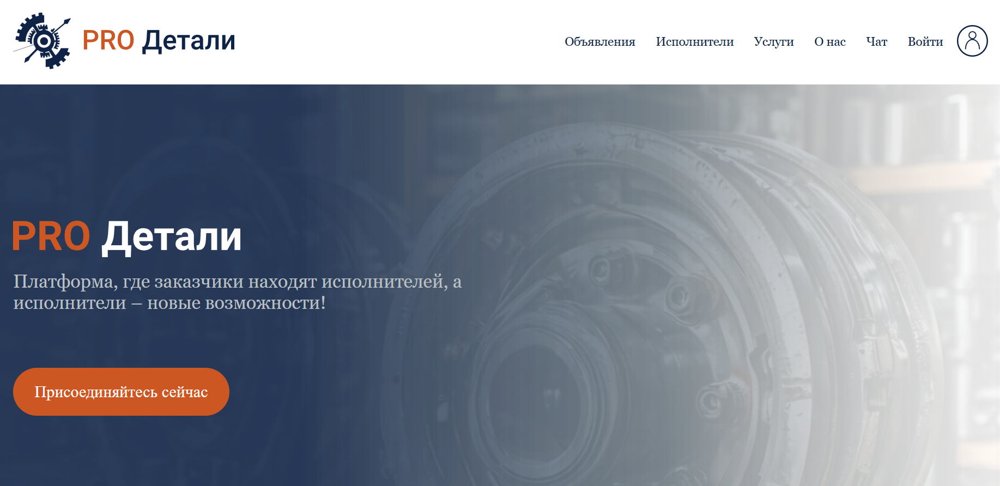

Добро пожаловать на сайт-журнал разработчика "PRO Детали"!
Аннотация проекта: Наша платформа соединяет заказчиков, нуждающихся в услугах по металлообработке, с квалифицированными исполнителями. Мы стремимся создать удобный и эффективный инструмент для поиска и выполнения заказов в сфере металлообработки, от токарных работ до сложной сварки и изготовления конструкций.
Здесь вы можете легко разместить свой заказ или найти исполнителя для ваших нужд. Исполнители, в свою очередь, получают доступ к широкой базе заказов и могут предложить свои услуги.